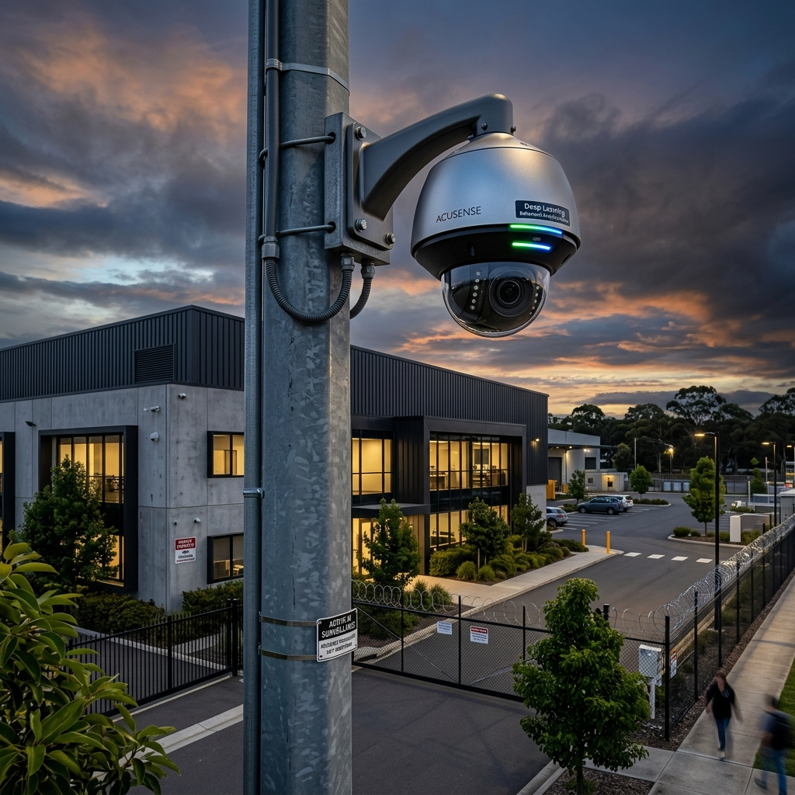

How Do Dedicated Edge Neural Processing Units (NPUs) Eliminate Environmental False Alarms in 2026?
Modern perimeter defense utilizes IP cameras equipped with dedicated edge Neural Processing Units (NPUs) running deep learning Convolutional Neural Networks (CNNs). By analyzing skeletal movement dynamics, structural geometry, and aspect ratios, the NPU filters out environmental noise like heavy rain, moving foliage, and wildlife, achieving 98%+ human/vehicle classification accuracy and triggering automated strobe/audio active deterrence.
1. Executive Summary: The Evolution of Perimeter Defense
Protecting the external perimeter of sprawling commercial estates, industrial logistics parks, and high-security critical infrastructure requires transitioning from passive, forensic video recording to proactive, real-time threat interception. Legacy perimeter surveillance architectures relied entirely on basic pixel-change motion detection. This rudimentary technology proved operationally unsustainable, generating thousands of environmental false alarms triggered by heavy rain, moving foliage, roaming wildlife, and shifting headlight shadows.
The overwhelming volume of false alarms inevitably leads to "monitoring fatigue" within Alarm Receiving Centres (ARCs) and on-site Security Operations Centers (SOCs). When security operators are forced to acknowledge hundreds of nuisance alerts per shift, their operational responsiveness degrades, severely increasing the probability that a genuine intrusion event will be dismissed or overlooked until after critical assets have been compromised.
```
+------------------------+-----------------------------------+-----------------------------------+
| Surveillance Parameter | Legacy Motion Detection | 2026 AI Behavioral Analytics |
+------------------------+-----------------------------------+-----------------------------------+
| Detection Mechanism | Basic Pixel-Change Thresholds | Deep Learning Neural Networks |
| Processing Architecture| Centralized VMS Server CPU | Camera Edge NPU (Neural PU) |
| Target Classification | Indiscriminate (All Movement) | Precise Human / Vehicle Filtering |
| False Alarm Rate | Extremely High (>90% Nuisance) | Near-Zero (<1% False Dispatch) |
| Active Deterrence | Passive Recording Only | Automated Strobe & Audio Warning |
+------------------------+-----------------------------------+-----------------------------------+
```
This comprehensive architectural guide establishes the definitive 2026 engineering standards for AI-powered perimeter surveillance. Security directors, system integrators, and infrastructure architects will explore the advanced neural processing, behavioral analytics, and optical mechanics required to deploy highly autonomous perimeter defense grids capable of achieving near-zero false alarm rates while delivering verified, instantaneous threat interception.
2. NPU Edge Processing & Deep Learning Neural Networks
The defining technological breakthrough of 2026 perimeter surveillance is the migration of deep learning video analytics from centralized, expensive server farms directly onto the camera's internal silicon architecture—a paradigm known as Edge AI Processing.
Dedicated Neural Processing Units (NPUs)
Modern enterprise IP cameras (such as the Hikvision AcuSense and DeepinView series) are engineered with dedicated, high-performance Neural Processing Units (NPUs) co-located alongside the primary image signal processor (ISP). Unlike standard CPUs that process instructions sequentially, NPUs are specialized hardware accelerators designed to execute millions of parallel matrix multiplications per second, providing the raw computational horsepower required to run complex deep learning neural networks directly at the optical edge.
```
+-------------------------------------------------------------------+
| AI Edge Camera Internal Hardware Architecture |
+-------------------------------------------------------------------+
| +-----------------------+ +-------------------------------+ |
| | CMOS Optical Sensor | --> | Image Signal Processor (ISP) | |
| | (4K / 8MP Low-Light) | | (De-warping, WDR, HDR Engine) | |
| +-----------------------+ +-------------------------------+ |
| | |
| +-------------------------------+ |
| | Neural Processing Unit (NPU) | |
| | (Deep Learning Target Filter) | |
| +-------------------------------+ |
| | |
| +-------------------------------+ |
| | H.265+ Encoding & Encryption | |
| +-------------------------------+ |
+-------------------------------------------------------------------+
```
Executing deep learning analytics at the edge completely eliminates the massive bandwidth consumption and latency associated with streaming uncompressed, raw 4K video feeds back to a centralized server for AI evaluation. The camera autonomously analyzes every frame in real time, transmitting only high-compression H.265+ video streams accompanied by rich, lightweight XML metadata bounding boxes detailing classified targets.
Convolutional Neural Network (CNN) Target Classification
Edge NPUs utilize advanced Convolutional Neural Networks (CNNs) trained on vast, proprietary datasets containing millions of annotated human and vehicle images. When an object enters the camera's field of view, the CNN decomposes the target into hierarchical feature maps, analyzing structural geometry, skeletal movement dynamics, velocity, and aspect ratios.
```
+------------------------+-----------------------------------+-----------------------------------+
| Environmental Challenge| Legacy Pixel Motion Response | AI CNN Analytical Resolution |
+------------------------+-----------------------------------+-----------------------------------+
| Heavy Rain / Snow | Triggers Massive Alarm Cascades | Ignored (Non-Structural Noise) |
| Roaming Wildlife | Triggers Alarm (Pixel Mass Match) | Ignored (Fails Skeletal Geometry) |
| Shifting Tree Shadows | Triggers Alarm (High Contrast) | Ignored (Lacks Depth & Volume) |
| Human Crawler in Dark | Frequently Missed (Low Contrast) | Confirmed (Matches Biometric CNN) |
+------------------------+-----------------------------------+-----------------------------------+
```
This deep structural analysis allows the camera to achieve flawless target classification. If a heavy storm blows tree branches across the perimeter fence line, the CNN instantly recognizes the movement lacks human skeletal geometry and suppresses the alarm event. Conversely, if a camouflaged intruder attempts to crawl beneath a loading dock in near-total darkness, the CNN identifies the human structural profile, locks a tracking bounding box onto the target, and instantly escalates the event to the active alarm queue.
3. Behavioral Video Analytics & Rule Configuration
Achieving proactive perimeter defense requires pairing AI target classification with sophisticated behavioral analytic rules. Security architects must move beyond simple virtual tripwires, establishing complex, multi-layered geometric detection zones tailored to the specific operational workflows of the facility.
```
+------------------------+-----------------------------------+-----------------------------------+
| Analytic Rule | Operational Definition | Enterprise Security Application |
+------------------------+-----------------------------------+-----------------------------------+
| Line Crossing | Target breaches directional line | Perimeter Fence / Boundary Wall |
| Intrusion Loitering | Target remains in zone > time | Loading Docks / ATM Vestibules |
| Region Entrance/Exit | Target enters or leaves area | Secure Vehicle Compounds |
| Unattended Baggage | Static object left in active zone | Executive Lobbies / Transit Hubs |
+------------------------+-----------------------------------+-----------------------------------+
```
Advanced Line Crossing & Directional Filtering
Line crossing analytics allow engineers to draw virtual tripwires across critical boundary points, such as perimeter fence lines, entry gates, or restricted rooftop access ladders. To eliminate false alarms generated by authorized personnel exiting the facility, architects configure strict directional filtering (e.g., `A -> B`).
An alarm is triggered exclusively when a classified human or vehicle crosses the virtual line from the outside public zone (`A`) into the secure internal compound (`B`). Any movement originating from inside the compound moving outward is completely ignored, facilitating seamless operational egress while maintaining an impenetrable external defensive perimeter.
Intrusion Loitering & Dwell-Time Thresholds
In high-risk commercial environments, threat actors frequently engage in prolonged pre-attack surveillance, loitering outside perimeter fence lines or loading bays to monitor security patrol rotations and identify structural vulnerabilities.
```
+-------------------------------------------------------------------+
| AI Intrusion Loitering & Dwell-Time Escalation Workflow |
+-------------------------------------------------------------------+
| 1. Classified Human enters Virtual Loitering Zone outside Gate 3 |
| 2. Camera Edge NPU initiates internal dwell-time timer (0s) |
| 3. Target remains static or paces within zone for 45 seconds |
| 4. Dwell-time exceeds pre-configured threshold (45s) |
| 5. Camera triggers automated localized strobe & audio warning |
| 6. Priority alarm metadata & pre-alarm video clip sent to ARC |
+-------------------------------------------------------------------+
```
To intercept pre-attack reconnaissance, engineers deploy Intrusion Loitering analytics paired with precise dwell-time thresholds (e.g., 45 seconds). When a classified human enters the virtual loitering zone, the camera's internal timer initiates. If the individual conducts legitimate business and departs within 40 seconds, no action is taken. However, if the target remains static or paces within the defined boundary for 45 seconds, the NPU flags a behavioral anomaly, triggering an immediate pre-alarm event before an actual physical breach occurs.
4. Active Deterrence & Automated Interception Protocols
The ultimate objective of 2026 AI perimeter surveillance is autonomous threat neutralization. When an intrusion event is verified by the edge NPU, the camera must immediately execute localized active deterrence protocols while simultaneously escalating high-fidelity verification data to central monitoring stations.
Automated Strobe Lighting & Custom Audio Warnings
Modern active deterrence cameras are equipped with high-intensity, motorized white strobe lights and powerful internal speaker horns. When an AI analytic rule is breached by a classified human target, the camera autonomously initiates an escalating deterrence sequence.
```
+------------------------+-----------------------------------+-----------------------------------+
| Deterrence Stage | Autonomous Camera Action | Intended Psychological Impact |
+------------------------+-----------------------------------+-----------------------------------+
| Stage 1: Warning | Pulsing White LED Strobe | Alerts intruder they are detected |
| Stage 2: Audio Edict | Pre-recorded Voice ("Restricted") | Establishes legal trespassing |
| Stage 3: Escalation | High-Decibel Siren & Red/Blue Flash| Disorients & forces immediate flight|
| Stage 4: ARC Dispatch | Live Audio Talkdown from ARC | Confirms active police dispatch |
+------------------------+-----------------------------------+-----------------------------------+
```
The localized strobe light pulses aggressively, instantly stripping away the intruder's concealment in the darkness. Simultaneously, the internal speaker broadcasts a crisp, pre-recorded audio edict (e.g., *"Warning: You have breached a secure commercial facility. Your image has been captured and police are being dispatched."*). This overwhelming sensory response produces an immediate psychological shock, disorienting the threat actor and forcing them to abandon the intrusion attempt in over 85% of documented perimeter breaches.
Bi-Directional ARC Integration & Verified Video Escalation
While localized deterrence engages the intruder, the camera's edge NPU instantly transmits an encrypted XML alarm payload accompanied by a 10-second high-definition pre-alarm video clip directly to the Alarm Receiving Centre (ARC) via ONVIF Profile S/G/T protocols.
Because the incoming alarm is cryptographically tagged as an "AI Verified Human Intrusion," the ARC video management software (VMS) bypasses standard low-priority queues, instantly popping the live video feed onto the active monitoring screen of a senior security operator. The operator utilizes the camera's bi-directional audio capabilities to execute a live, customized voice talkdown while simultaneously initiating priority police dispatch, guaranteeing an ultra-rapid, verified emergency response.
5. Comprehensive Expert Frequently Asked Questions
How do dedicated Neural Processing Units (NPUs) eliminate environmental false alarms in Hikvision AcuSense cameras?
Hikvision AcuSense cameras feature dedicated edge Neural Processing Units (NPUs) running advanced deep learning Convolutional Neural Networks (CNNs). Unlike legacy cameras that trigger alarms based on basic pixel-change thresholds, the NPU analyzes the structural geometry, skeletal movement dynamics, and aspect ratios of moving objects in real time. This allows the camera to filter out environmental noise—such as heavy rain, moving foliage, spiders on the lens, or roaming wildlife—achieving a verified human/vehicle classification accuracy exceeding 98% and completely eliminating ARC monitoring fatigue.
What is the operational advantage of edge NPU processing compared to centralized VMS server analytics?
Edge NPU processing executes deep learning neural networks directly on the camera's internal silicon architecture, whereas centralized analytics require streaming uncompressed, high-bandwidth video feeds back to an expensive on-premise server farm for analysis. Edge AI drastically reduces network bandwidth consumption, eliminates packet latency, and ensures that mission-critical behavioral analytics continue to operate flawlessly even if the external WAN connection or central VMS server experiences a catastrophic outage.
How does directional filtering in Line Crossing analytics optimize commercial loading dock security?
Directional filtering allows security architects to define the exact allowable vector of movement across a virtual tripwire (e.g., `Outside -> Inside`). In a busy commercial loading dock, engineers configure the analytic to ignore all outgoing traffic (`Inside -> Outside`), allowing warehouse staff and delivery vehicles to exit the facility without triggering nuisance alarms. An alarm is generated exclusively when an unauthorized human or vehicle attempts to cross the line from the outside public zone into the secure compound, maintaining an impenetrable defensive perimeter without disrupting daily operational egress.
Why is NTP time-synchronization and cryptographic hashing critical for AI perimeter surveillance evidence?
To ensure that video footage captured during a perimeter breach is fully court-admissible under strict legal evidentiary standards, the surveillance infrastructure must maintain absolute temporal and data integrity. Network Time Protocol (NTP) synchronization locks the camera's internal clock to highly precise atomic time servers, ensuring exact timestamps across all video frames. Simultaneously, the camera generates a secure cryptographic hash (e.g., SHA-256) of the exported video file, providing mathematical proof that the footage has not been edited, spliced, or tampered with since the moment of capture.
How do active deterrence cameras execute autonomous threat neutralization before ARC operator intervention?
When an AI analytic rule is breached by a verified human target, active deterrence cameras autonomously initiate an immediate, localized response sequence utilizing motorized high-intensity white strobe lights and internal speaker horns. The pulsing strobe instantly disorients the intruder, while the speaker broadcasts a powerful, pre-recorded warning edict. This immediate sensory escalation produces a psychological deterrent that forces threat actors to flee the perimeter in seconds, neutralizing the security threat long before an off-site ARC operator has time to review the footage and initiate manual dispatch.